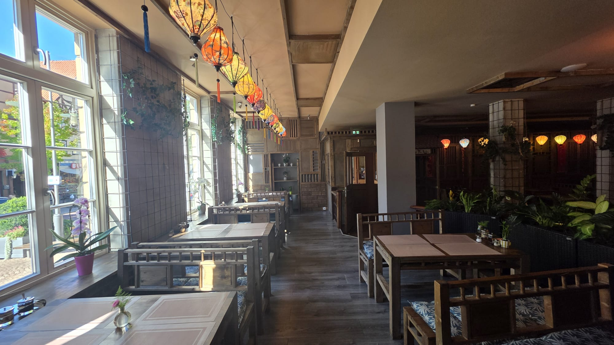
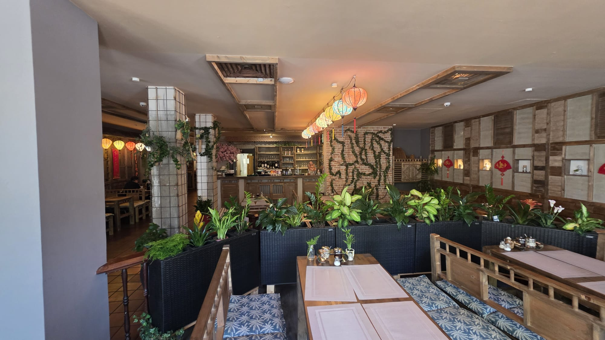
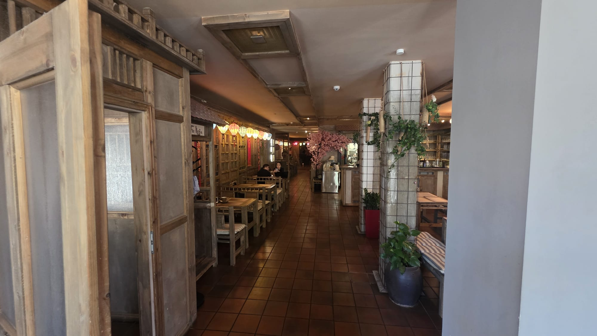
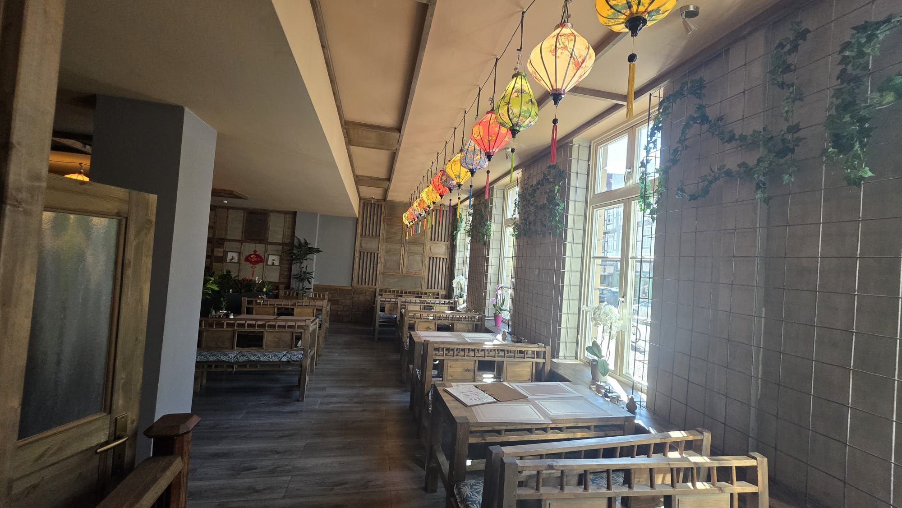

VIETNAMESISCHE KÜCHEFÜR GUTE MOMENTE
ASIA KÜCHE RESTAURANT
01 / ÜBER UNSVIET FAMILY
GEMEINSAM
GENIESSEN.
Viet Family bringt vietnamesische Gerichte und asiatische Küche an einen Tisch: von Phở und Bún bis zu warmen Reisgerichten.
Ob vor Ort oder zum Mitnehmen – wählen Sie, worauf Sie heute Appetit haben.
SPEISEKARTE ANSEHEN
02 / UNSERE KÜCHE
VON PHỞ
BIS BÚN.
Die Speisekarte vereint vietnamesische Suppen und Reisnudelgerichte mit vegetarischen Speisen, Gegrilltem und Spezialitäten des Hauses.
DIE GANZE KARTE
ZEIT FÜR
GEMEINSAM.
04 / RESTAURANTUNSER ORT
PLATZ
FÜR ALLE.
Holztische, Pflanzen und farbige Laternen prägen unseren Gastraum. Nehmen Sie Platz und bleiben Sie, so lange es Ihnen gefällt.

06 / INFORMATIONVIET FAMILY
GUT ZU
WISSEN.
ÖFFNUNGSZEITEN
Montag – Donnerstag11:30 – 15:00
17:00 – 21:30
17:00 – 21:30
Freitag – Sonntag
& Feiertage12:00 – 22:00
& Feiertage12:00 – 22:00